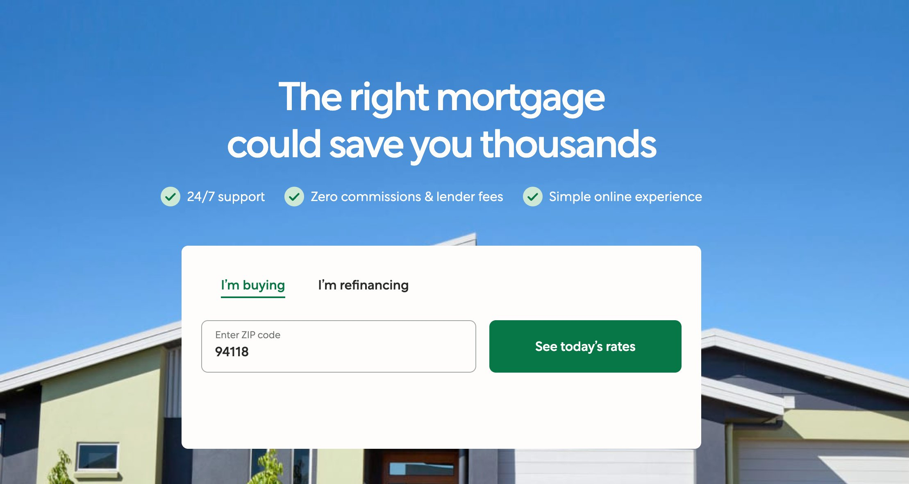
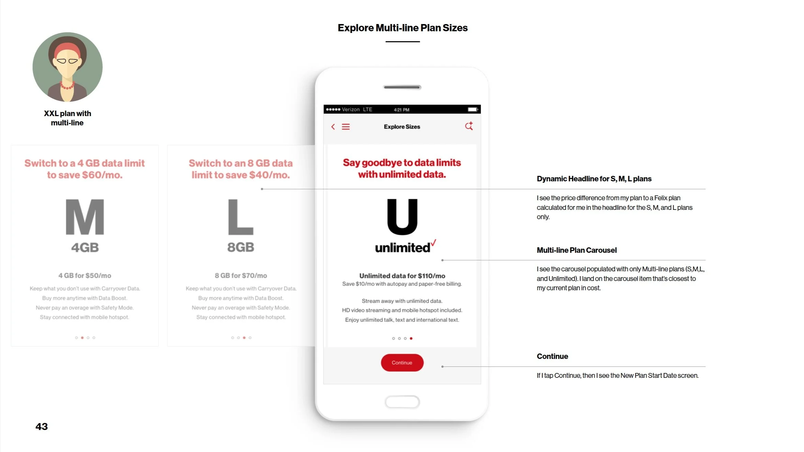
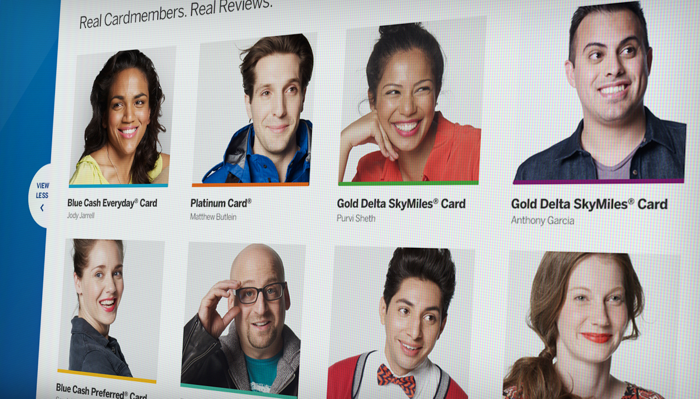

Content design and UX writing
The best interface copy is invisible.
The work I'm proudest of lives at the product level: the UX journeys for SoundCloud, Verizon, Better.com, American Express, and Goldman Sachs. It’s a different craft than a campaign headline, and the goal is simpler. The writing exists to help someone finish what they came to do. More recently, that means writing the rules a model follows when it does the writing instead.
SoundCloud Go
Verizon
Goldman Sachs design system
American Express (with Huge)
When AI writes the copy.
For much of my career the job was writing the line. When a model writes the line, the job becomes writing the rule underneath it, and then deciding whether what came out is any good. Those are two disciplines. I do both.
Writing the rules. A voice guideline written for a person and one written for a model are never the same. A person reads a tone attribute and interprets it.
On Lincoln, I built the brand's voice and style rules into a working model as an instruction set, with a strict and growing list of guardrails, so product owners who were not writers could draft on brand. Nothing reached the client without a writer reading it first. I did the same at AREA15, where no voice guide existed at all, so the rules and the instruction set were written at the same time.
Written for a person
Confident, not arrogant.
We are self-assured without boasting. State what we know. Do not oversell.
A writer reads this and interprets it. Two writers will interpret it two ways, and both will be able to defend their version.
Written for a model
- The rule
- State capability as fact. No superlatives, no comparison against a competitor.
- The boundary
- Never “best,” “leading,” “unmatched.” Never a comparison against a rival, named or implied.
- Correct
- “Runs at 42 decibels.”
- Nearly correct
- “The quietest in its class.”
- How to tell them apart
- The near miss makes a comparison the reader cannot check, which is the boast the attribute exists to prevent. The correct version gives the number and lets the reader draw the conclusion.
Same attribute. Now it can be followed, tested, and graded.
Grading the output. I train and evaluate AI models on writing quality for an AI company, under NDA. That means sitting with generated text and deciding, line by line, what separates fluent from good, with the reasoning written out. Doing both sides changed how I write standards, and it is why the guidelines get rewritten every time the model changes.
A rule precise enough for a model to follow exposes every place the human version was vague and got away with it.
How I got here.
I started as a journalist, then I moved to brand copywriting. Along the way, the work shifted: the copy that mattered most was no longer the flashy ad. It was the button no one noticed and the onboarding step no one dreaded. The brands that take that seriously are the brands I want to work with.
The work.
SoundCloud Go
A paid tier launched to 175 million people who had never paid for anything. The first version failed. I wrote the second.
The first launch led with everything the subscription included and put the price further down, so it read as the free product being taken away and sold back. The audience said so immediately. I argued internally for inverting it, free stated plainly and first, subscription as an upgrade on top, and wrote that version. It replaced the original and it is still what SoundCloud runs.

Better.com
One of the most anxiety-inducing processes in American life, moved entirely online.
I spent a year embedded across onboarding flows, loan applications, error states, email sequences, and the brand voice system that governed how to sound like Better on every surface. Error and delay states are the hardest copy in a mortgage flow. The customer is already worried, the news is rarely good, and the line has to stay calm without lying to them.

“Your rate is locked. That means it won’t change no matter what happens to the market while your loan is processing.”
Rate lock confirmation
“This is the part most lenders make complicated. We’re going to make it a checklist.”
Document upload intro
“We didn’t hear back from the underwriter. That’s normal, we’ll ping them again tomorrow.”
Error and delay state
Goldman Sachs
Language for a design system used by teams I would never meet.
I led the copy on the language layer of Goldman's public design system, launched February 2020: labels, empty states, and error messages written once and then used by teams I would never meet. The test was never whether the lines were good. It was whether a product manager on a deadline, with no writer available, would make the same call I would. I wrote the system's principles too, as titled imperatives rather than adjectives, including one called "Consistent, not creaky."
“Financial tools are rarely simple. But they can always be clear.”
Goldman Sachs Design System, design.gs.com, published February 2020.
Verizon Wireless
One vocabulary for 113 million people managing their own accounts.
One of the highest-traffic consumer websites in the United States. The existing site had accumulated years of copy written by different teams to different conventions. I replaced that accumulation with a system: vocabulary, nomenclature standards, and copy patterns governing navigation, product pages, onboarding, support, account management, and transactional messaging. Nobody opens a carrier app for pleasure. They open it to do one thing, and the writing either gets them through it or it does not.

68% → 85%
In-app bill payment, within seven months of launch
15.6x
Mobile sales conversion
+27%
Autopay enrollment
Evercore
An institutional finance name writing for individual investors for the first time.
Everything the firm already knew how to say was written for institutions, so the voice, the tone guidelines, and the messaging framework all had to be built for a reader who had never been the customer before.
American Express
Content design with one foot in campaign creative.
Mobile-first experiences where the copy had the clarity and purpose of UX writing while still carrying the campaign. We tested language decisions in the flow rather than in brand decks, working closely with the UX and visual design teams at Huge.

Every word earns its space. On a small screen, there’s no room for a second draft.
Working principle
Product writing across mortgage, wealth management, telecom, and enterprise finance, in Figma alongside design and product. Turning compliance-written copy into something fit for a human to read. At Goldman I also recruited junior writers onto the team, onboarded them, and managed their daily work.
If your product has to say something difficult and say it clearly, I would like to hear about it.